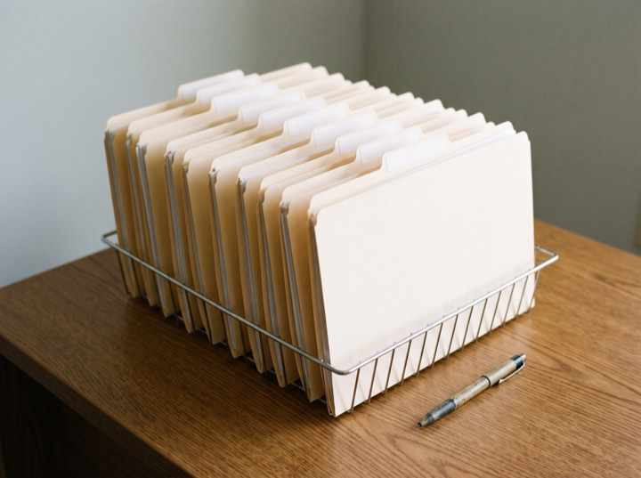
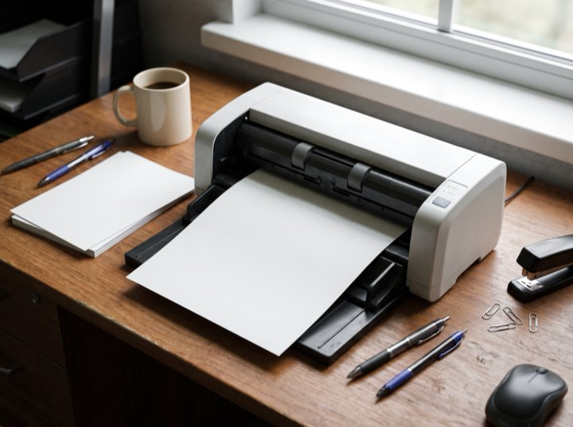
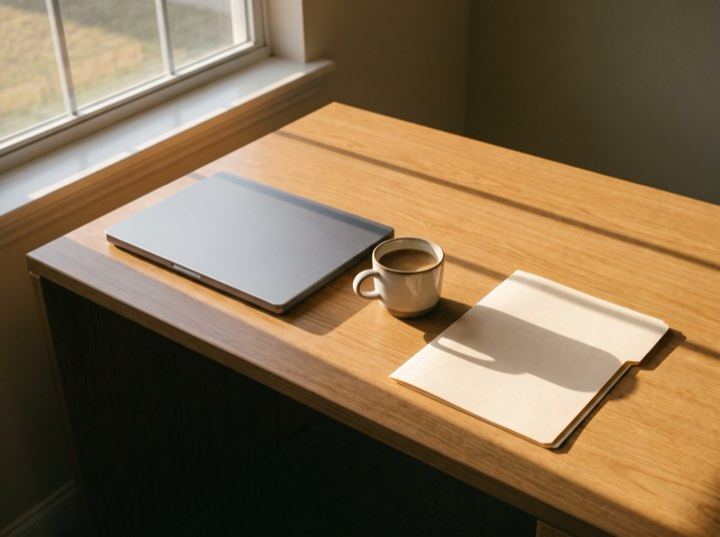
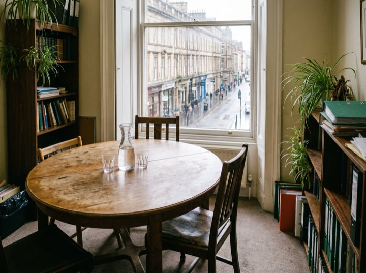

Business advisory & tax
Business accounting, tax and advisory for owner-managed companies. A live checklist shows exactly which documents are outstanding and who is holding each one. Usually us, and we say so.
Services
We work with owner-managed businesses between roughly $500k and $20M in revenue. Below that we'll point you somewhere better suited.
Federal, state and local returns, filed early rather than extended. Extensions are a symptom, not a service.
Books closed by the tenth, with a short written commentary. You should not be finding out about last quarter in April.
Entity structure, owner compensation, cash-flow forecasting and the tax planning that only works if it happens before December.
Included for owners of business clients. Your company and personal position are the same problem and should be looked at together.
Results
Process
Easier than people think, and best done between May and August rather than in January.
Thirty minutes. What your business does, what's currently painful, and whether we're the right size for each other.
We look at two years of returns and your current books, then propose a fixed monthly fee. No hourly billing, ever.
We request records from your current accountant and the checklist shows you where that request has got to. No chasing on your side.
Books monthly, a proper conversation quarterly, tax planning in the autumn while it can still change the outcome.
What we are waiting on
The portal, the folders and the desk where the list gets ticked. When the list is empty, the books are closed.




Then this is the right month to talk. Everything worth fixing has to be built between May and August. By January it's too late to change anything.
Fixed monthly fees. Business clients from roughly $500k revenue. Free discovery calls.